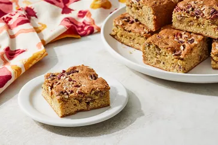

Maple Pecan Blondies

About
These warm and cozy maple pecan blondies have a brownie-like texture with fudgy with crunchy edges
Ingredients
2 Cups Flour
1 tsp Salt
1 tsp Baking Soda
1/4 tsp Baking Powder
2/3 cup Unsalted Butter
1 1/4 cups Packed Brown Sugar
1/2 cup Pure Maple Syrup
2 Large Eggs
2 tsp Vanilla Extract
1 1/2 cup Pecans, toasted, chopped, divided
Instructions
Step 1
Gather ingredients. Preheat the oven to 350 degrees F.
Step 2
Line an 8x8-inch baking pan with parchment paper, extending the paper over the sides.
Step 3
In a large bowl whisk together flour, salt, baking powder, and baking soda; set aside.
Step 4
In a medium saucepan combine butter, brown sugar, and
maple syrup. Cook and stir over medium heat until melted and smooth,
about 6 minutes. Remove from heat; let cool for 10 minutes.
Step 5
Stir eggs and vanilla into the butter mixture.
Step 6
Stir butter mixture into flour mixture.
Step 7
Fold in 1 1/4 cups of the pecans.
Step 8
Spread batter in prepared pan.
Step 9
Sprinkle remaining 1/4 cup pecans over the top. Bake until set, 35 to 40 minutes. The internal temperature should read 200 degrees F,
Step 10
Cool for 10 minutes on a wire rack before lifting from pan with the parchment paper. Cool completely on a wire rack. Cut into bars for serving.
Back to main page